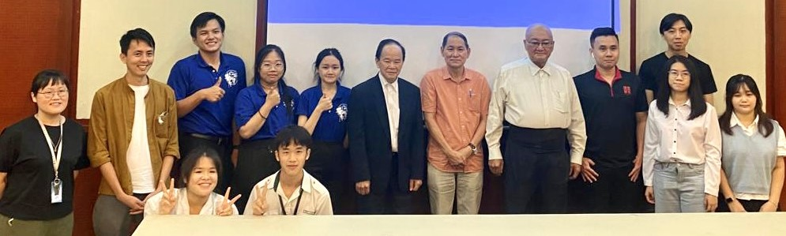

社区企划赛圆满落幕 培风中学荣获特优奖
主办、协办单位代表与获奖队伍合照。左六起：董总主席陈大锦、评委代表陈亚才、董总副主席杨应俊。由董总主办，隆雪华青协办的“从土地发声：2022年大专青年社区参与企划”决审汇报暨展览，于9月24日在隆雪华堂圆满落幕。
社区参与就是社区营造，让社区居民参与周遭事务，共同决定，共同营造美好环境。社区营造是在“造人”，让只关心自身权益的人，成为关心公共事务的公民，再壮大这群公民号召更多人参与，共同打造一个新社区，新社会，从改造社区扩展到改造社会。
参与此活动的队伍，在晋级决选时所呈现的企划类型非常多元，涵盖社区营造、文化保存、创意行销、田野调查、记录出版等。企划案范围分布各州，其中有雪兰莪三组，以及吉隆坡、霹雳、槟城、马六甲、新山各有一组参与。评委和特邀嘉宾评委则针对各企划案的内容、现场展览和口头汇报这三个部份进行评分，选出优胜队伍。众多企划中不乏提出后疫情时代的社区发展想象和创意提案，可见大专青年的构想和活力。
董总主席陈大锦致开幕词时指出，目前已有不少独中教师结合公民教育课，带领学生走出校园，将课堂与社区结合，做田野调查、社区导览，主办社区活动。他勉励所有参与者，须谨记社区营造没有输赢之分，社会改革没有终点，欲促成任何改变，亟需不同世代携手前进，长期投入耕耘，日久当见其功。
本活动导师和评委为隆雪历史与文化遗产之友学会主席陈亚才、UCSI大学建筑与环境学院助理教授张集强、2014年“看见十八丁”社区艺术嘉年华总策划庄白祺和马来亚大学中文系高级讲师何启才。
特邀嘉宾评委为隆雪华青团长李仕强、星洲日报副刊副主任关丽玲、马来西亚陈嘉庚基金副主席锺启章、乌鲁冷岳社区文物馆馆长李腾、上海商务联合书店主任黎振雄、“亚答屋84号图书馆”共同创办人吴小保、“走街组织”负责人卓振宏、《吉隆坡华人路名地图》作者蔡立豪、坤成中学教师黄瑞泰和尊孔独中教师黄翠妮。
本活动获得时任雪州万宜区国会议员王建民、武吉加星区州议员拉吉夫（Rajiv Rishyakaran）、拿督陈治年、陈国展和陈师明赞助，星洲日报为合作媒体。支持单位包括马来亚大学华文学会、国民大学华裔学生理事会、新纪元大学学院学生会、双威大学华文学会、泰莱大学华文学会、UCSI大学中华文化学会和建设大学华文学会。
本届参赛队伍的企划案整体表现可圈可点，获得众评委肯定，最终由马六甲培风中学公民与社会教育师生小组夺得特优奖，奖金为5,000令吉，另三支优秀奖队伍分别获得2,000令吉奖金。
“从土地发声：2022年大专青年社区参与企划”获奖名单：
| 奖项 | 队伍 | 企划案名称 |
|---|---|---|
| 特优奖（1队） | 培风中学公民与社会教育师生小组 | “一起懂街纳”——东街纳社区导览计划 |
| 优秀奖（3队） | Specky Studio | 双溪威新村桌游俱乐部 |
| 冲锋陷阵队 | 走巴刹，带你认识加影人！ | |
| “字”命不凡 | 近打谷石灰岩洞保育运动纪实（2019-2022） |
任何社会运动，都必须回到土地、回到社区、回到日常生活的主张。真正的文化创新，真正的改革愿景，必须在生活中慢慢积累才有可能达成。回到社区，扎根社区，让运动生活化，也让生活运动化，才有办法对整个社会进行根本的改造。以“从土地发声”为活动主题，激发大专青年发挥创意投入社区发展，培养对在地的认同感，这就是主办单位的初衷。